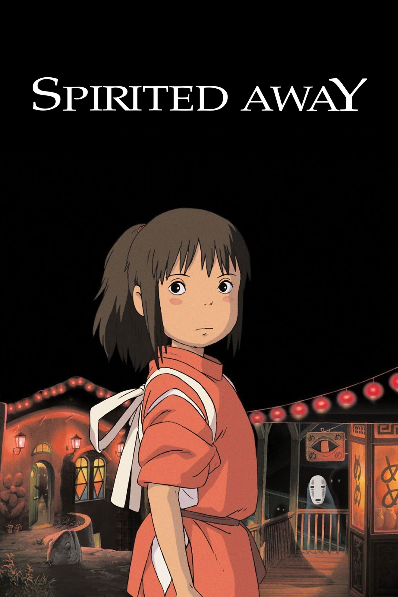

← Voltar para os filmesANIMAÇÃO • FANTASIA
A Viagem de Chihiro
Chihiro entra em um mundo de espíritos e precisa encontrar coragem para salvar seus pais, que foram transformados, enquanto aprende a sobreviver em uma misteriosa casa de banhos.